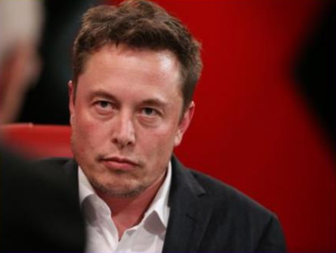

Илон Маск
Илон Рив Маск (англ. Elon Reeve Musk род. 28 июня 1971 года, Претория, ЮАР)
— инженер, предприниматель, изобретатель и инвестор; долларовый миллиардер.
- Сооснователь компании PayPal;
- основатель, совладелец, генеральный директор и главный инженер[1] компании SpaceX;
- председатель совета директоров, генеральный директор и
главный идейный вдохновитель
(Chief Product Architect) компании Tesla;
- также был членом совета директоров компании SolarCity, основанной его двоюродными братьями, до
её слияния с
Tesla.

В рейтинге миллиардеров журнала
Forbes в 2017 году его состояние
оценивалось более чем в
$21 млрд [2].
Увлечения
- Маск владел самолётом Aero L-39 Albatros чехословацкого производства.
- Позже он купил реактивный самолёт Dassault Falcon 900 из фильма «Здесь курят».